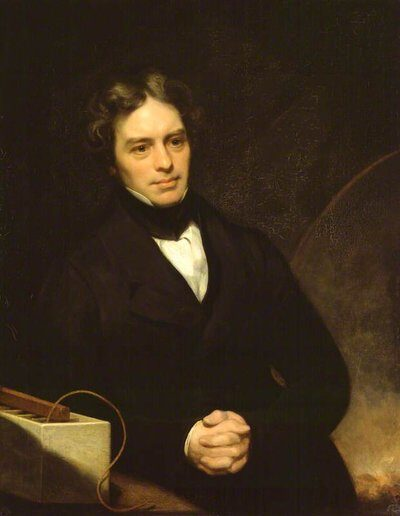
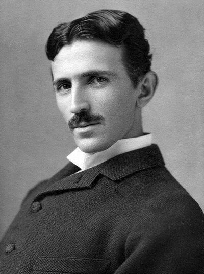

Every spark, every lightning bolt, every phone charge comes down to the same tiny thing: electrons moving around. This lesson explains what electricity actually is using things you can touch and see, then tells the true story of how people figured it out — from rubbing amber in ancient Greece to a kite in a thunderstorm to the invention of the power grid.
Everything in the universe — this screen, the air, your hand — is made of atoms. Every atom has a center (the nucleus) made of protons and neutrons, surrounded by tiny particles called electrons that carry a negative electric charge. Protons carry a positive charge. Normally an atom has equal numbers of each, so it's electrically neutral — balanced.
Electricity is simply electrons on the move. When electrons pile up somewhere they don't belong, or stream steadily from one place to another, that motion of charge is what we call electricity. Nothing mystical is happening — it's just very small particles doing very ordinary things, extremely fast.
For younger learners
Think of electrons like marbles that live inside every tiny building block (atom) of everything around you. Rub two things together and some marbles jump from one to the other. Electricity is just those marbles moving — either jumping in one big static spark, or rolling along a wire in a steady stream.
For older learners
Charge is conserved and quantized — it moves in whole-electron units and never appears or disappears, only transfers. Voltage is the electrical "pressure" pushing those electrons; current is the rate they flow past a point, measured in amperes. Dig into the math in Coulomb's Law and Ohm's Law once the concept here feels solid.
The Water Analogy: Voltage, Current, and Resistance
Once you know electricity is moving electrons, the next step is having words for how much is moving and how hard. Physicists and electricians describe electricity with three linked quantities, and the classic way to picture all three at once is water flowing through pipes.
Voltage (volts, V)
The "push" behind the electrons — like the water pressure created by a tall water tower. A battery's voltage is how hard it shoves electrons around the circuit. No push, no flow, no matter how open the pipe is.
Current (amps, A)
The rate electrons actually flow past a point — like gallons of water passing through a pipe each second. More push (voltage) or a wider pipe (less resistance) both mean more current.
Resistance (ohms, Ω)
How much the pipe fights the flow — like a narrow valve or a kinked hose. Thin wires, long wires, and materials like rubber all add resistance and choke off current for the same push.
Tower = voltage (the push) · valve = resistance (how open the path is) · wheel = the load, spun by current (the flow)
Wide-open valve, same water tower height: water rushes through fast and the wheel spins quickly. That's high current at a fixed voltage, thanks to low resistance.
The exact relationship
These three aren't just similar — they're locked together by a precise equation, Ohm's Law: voltage = current × resistance (V = IR). Push harder or open the valve wider and current goes up; add resistance and current goes down for the same push. See the full math, with worked examples, in Ohm's Law.
Why Some Materials Carry Electricity and Others Don't
Resistance isn't the same everywhere — it depends heavily on what a material is made of. In some materials, the outermost electrons are barely attached to their atoms and hop easily from one to the next. In others, every electron is locked tightly in place with nowhere to go.
Conductors
Metals like copper, silver, gold, and aluminum have loosely-held outer electrons that move freely between atoms — very low resistance. That's why wires and plug contacts are built from copper and gold-plated metal.
Semiconductors
Silicon and germanium sit in between — normally poor conductors, but engineers can precisely control how well they conduct by adding trace impurities. That controllable in-between behavior is the entire basis of transistors and computer chips.
Insulators
Rubber, glass, plastic, and dry wood hold their electrons tightly with almost nowhere to move — extremely high resistance. That's why wires are wrapped in rubber or plastic and power lines hang from glass or ceramic insulators.
Why this matters for safety
Your body is mostly water with dissolved salts, which makes it a decent conductor — much better than dry air, but far worse than copper. That's why standing on dry ground (an insulator) is safer around electricity than standing in a puddle (a much better conductor), and why electricians work on de-energized circuits whenever possible.
Two Kinds of Electricity
Almost everything electrical falls into one of two categories: charge that stays put (static) and charge that keeps moving in a loop (current). Both are the exact same electrons — just behaving differently.
Static Electricity: Charge That Jumps
Rub a balloon on your hair, wool, or a carpet, and electrons scrub off one surface and pile onto the other. Now one object has extra electrons (negative) and the other is short some (positive). Opposite charges attract, so the balloon and your hair pull toward each other — until the extra electrons finally jump back across the gap, sometimes as a visible spark (or a shock when you touch a doorknob after shuffling on carpet).
3D preview needs WebGL, which isn't available here — the rest of the demo still works below.
Try it here
Click the button to "rub" the balloon on the hair below and watch what happens — drag the 3D scene to look around. Then try it for real with an actual balloon — it works best on a dry day.
The hair hangs straight down — balanced charge, nothing happening yet.
Want a more detailed version? Try PhET's free Balloons and Static Electricity simulation, which shows the actual electrons transferring.
Current Electricity: Charge That Flows
A battery uses a chemical reaction to push electrons out one terminal, through a wire, through whatever the wire connects to, and back in the other terminal — a continuous loop. That steady flow is current, and it's what powers lights, motors, and every device you own. Unlike a static spark, current can keep flowing for as long as the battery (or power plant) can keep pushing.
The switch is open — no path for electrons, so nothing flows and the bulb stays dark.
Want to build real circuits with batteries, resistors, and switches? Try PhET's free Circuit Construction Kit: DC simulation.
Common misconception
Electricity isn't "used up" by a bulb the way gas is used up by a car. The same electrons flow all the way around the loop and back into the battery. What actually gets used up is the battery's stored chemical energy, which keeps pushing the electrons along. When the chemicals run out, the push stops — even though the electrons are all still there.
The Long Search to Understand a Spark
Humans noticed electrical effects thousands of years ago but didn't understand what caused them — or how to control them — until surprisingly recently. Click through the timeline to see how the picture came together, piece by piece, over about 2,500 years.

Michael Faraday — a bookbinder's apprentice with almost no formal math training — discovered electromagnetic induction in 1831, the principle every generator and motor still runs on today.

Nikola Tesla championed alternating current (AC), which won out over Thomas Edison's direct current (DC) because transformers could step AC voltage up for efficient long-distance transmission, then back down to a safe level for homes. See Nikola Tesla and AC vs. DC for more.
From Power Plant to Your Wall
The electricity in your outlet took a long trip to get there. Here's the tangible version of that journey, for any age.
1. It's generated
A power plant spins a big magnet inside coils of wire (or the reverse) — exactly Faraday's 1831 trick, just at massive scale. Spinning can come from burning fuel, falling water, wind, or a nuclear reactor's heat.
2. Voltage is stepped up
A transformer raises the voltage to hundreds of thousands of volts. Higher voltage means less energy is wasted as heat while traveling long distances on power lines — the key reason AC won the War of the Currents.
3. It travels the grid
Power lines carry electricity across the countryside to substations near your town, often hundreds of miles from where it was generated.
4. Voltage is stepped down
More transformers lower the voltage in stages — first for neighborhoods, then again in the gray can-shaped transformer on the utility pole outside your house — down to a safe 120/240 volts.
5. It flows through your walls
Wires inside your walls carry current to every outlet and switch, all wired back to a breaker panel that can cut the flow instantly if something goes wrong.
6. A device puts it to work
A lamp turns the flow into light, a motor turns it into motion, a phone charger turns it into stored chemical energy in a battery — the same moving electrons, doing something different every time.
Try It Yourself
Electricity is one of the easiest physics topics to make tangible — most of these need nothing but household items. Always do the current-electricity activities with an adult and only ever use a battery, never a wall outlet.
Balloon on the wall
Rub a balloon on your hair or a wool sweater for 20 seconds, then press it to a wall. It sticks — the extra electrons on the balloon attract the wall's positive charges through the surface.
Any age
Bending water
Rub a plastic comb on dry hair, then hold it near a thin stream of water from a tap. The stream bends toward the comb — visible proof that a static charge pulls on the water's molecules.
Any age
Pick up paper bits
Tear tissue paper into tiny pieces, rub a comb or balloon to charge it, and hold it just above the pieces. They jump up and stick — the same static attraction, on a lighter object.
Ages 4+
Lemon (or potato) battery
Push a zinc-coated nail and a copper coin into a lemon, a small distance apart. They react chemically with the juice to generate a tiny voltage — enough to register on a multimeter or dimly light an LED with several lemons in series.
Ages 8+
Build a simple circuit
Connect a battery, a switch, and a small bulb or LED with wires in a loop. Open the switch and it's dark; close it and current flows. Full step-by-step in Breadboard Basics.
Ages 8+
Electromagnet from a nail
Wrap insulated wire around an iron nail, connect the ends to a battery, and the nail becomes a magnet strong enough to pick up paper clips — Ørsted's 1820 discovery, recreated on a kitchen table.
Ages 8+
Fun Facts & Myths, Busted
Myth: electricity travels through a wire at the speed of light
The individual electrons actually drift quite slowly — often just millimeters per second. What moves near light speed is the electric field's push, so every electron in the wire starts moving almost instantly, even though none of them travel far or fast.
Fact: lightning is roughly 5x hotter than the sun's surface
A lightning bolt can briefly reach about 30,000 Kelvin — hotter than the surface of the sun, which sits around 5,800 Kelvin. The rapid heating of the air is also what causes the shockwave you hear as thunder.
Myth: Benjamin Franklin discovered electricity
Electricity was known and studied for over 2,000 years before Franklin. His famous 1752 kite experiment showed that lightning is the same kind of electricity as a static spark — a huge discovery, but not the discovery of electricity itself.
Fact: your body runs on electricity too
Every thought, muscle twitch, and heartbeat is driven by tiny electrical signals traveling along your nerves — the same basic charge-in-motion idea, running inside living cells instead of copper wire.
Safety first
Never recreate the Franklin kite experiment — it's genuinely dangerous, and at least one scientist trying to repeat it (Georg Wilhelm Richmann, 1753) was killed. Static electricity from a balloon is harmless; lightning and wall outlets are not. Keep experiments to low-voltage batteries only.
Go Further
This lesson is the foundation. Here's where to go next depending on what caught your interest — more lessons on this site, and a few free interactive simulations from PhET (University of Colorado Boulder) worth exploring on your own.